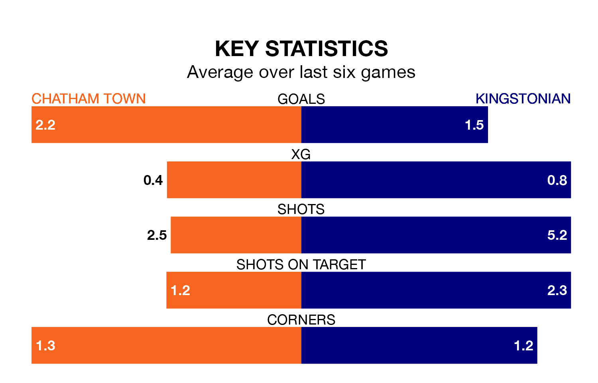

Relegation candidates Kingstonian face a challenge away against high-flying Chatham Town on Monday.
Kingstonian are rooted to the bottom of the Isthmian Premier Division table, and have picked up four wins and six draws in their 35 games to date.
Chatham, meanwhile, are second in the standings with 72 points, having won 22 and drawn six of their first 37 matches, and are 13 points behind table-toppers AFC Hornchurch.
Chatham are in reasonable form in the Isthmian Premier Division, with three wins and two draws from their last six games.
With no wins and a draw over that period, Kingstonian's form is much worse – they have taken one point from 18, compared to Town's 11.
With 77 goals in 37 games so far this season, the home side are the league's second-highest scorers with 2.1 goals per game. And they are conceding fewer than average, letting in 53 goals at a rate of 1.4 per game.
The visitors, meanwhile, are below average scorers, with 1.4 goals per game, compared to a league average of 1.6. They have conceded 2.4 goals per game.
Chatham's last match was on Friday, a 2-2 draw against Cray Wanderers.
Kingstonian lost 5-3 against Hashtag United last time out, on Saturday.
Updated: 10:31 (UTC), 31/03/24